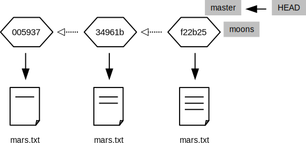

Git 브랜치(Branching)
다음이 지금 상태 정보다.
$ git log
commit 005937fbe2a98fb83f0ade869025dc2636b4dad5
Author: Vlad Dracula <vlad@tran.sylvan.ia>
Date: Thu Aug 22 10:14:07 2013 -0400
Thoughts about the climate
commit 34961b159c27df3b475cfe4415d94a6d1fcd064d
Author: Vlad Dracula <vlad@tran.sylvan.ia>
Date: Thu Aug 22 10:07:21 2013 -0400
Concerns about Mars's moons on my furry friend
commit f22b25e3233b4645dabd0d81e651fe074bd8e73b
Author: Vlad Dracula <vlad@tran.sylvan.ia>
Date: Thu Aug 22 09:51:46 2013 -0400
Starting to think about Mars
$ cat mars.txt
Cold and dry, but everything is my favorite color
The two moons may be a problem for Wolfman
But the Mummy will appreciate the lack of humidity
상기 저장소 정보를 다음과 같이 도식화할 수 있다.
(master라는 상자가 왜 있는지 곧 알게된다.)

다음 명령어를 실행하자.
$ git branch moons
아무것도 하지 않는 것처럼 보인다.
하지만, 시스템 뒤에서는 moons이라는 브랜치(branch, 분기)를 생성했다.
$ git branch
* master
moons

Git는 지금부터 이력에 두개 북마크를 유지관리한다.
저장소를 설치할 때 자동적으로 생성되는 master,
방금 전에 생성한 moons이다.
지금은 북마크 두개모두 같은 수정기록(revision)을 지정하고 있지만 변경할 수 있다.
moons 브랜치를 활성화하자.
$ git checkout moons
Switched to branch 'moons'
$ git branch
master
* moons

파일은 같아 보인다.
$ cat mars.txt
Cold and dry, but everything is my favorite color
The two moons may be a problem for Wolfman
But the Mummy will appreciate the lack of humidity
파일이 동일하기 때문에 파일에 라인을 하나 추가하자.
$ echo "Maybe we should put the base on one of the moons instead?" >> mars.txt
그리고 나서 완전히 새로운 파일을 추가하자.
$ echo "Phobos is larger than Deimos" > moons.txt
$ ls
mars.txt moons.txt
이제 Git를 통해서 변경된 파일이 하나 있고 신규 파일이 하나 더 있음을 확인할 수 있다.
$ git status
# On branch moons
# Changes not staged for commit:
# (use "git add <file>..." to update what will be committed)
# (use "git checkout -- <file>..." to discard changes in working directory)
#
# modified: mars.txt
#
# Untracked files:
# (use "git add <file>..." to include in what will be committed)
#
# moons.txt
no changes added to commit (use "git add" and/or "git commit -a")
상기 변경사항을 추가하고 커밋(commit)하자.
(git commit에 -A 플래그 옵션은 "모든 것을 추가"를 의미한다.)
$ git add -A
$ git status
# On branch moons
# Changes to be committed:
# (use "git reset HEAD <file>..." to unstage)
#
# modified: mars.txt
# new file: moons.txt
#
$ git commit -m "Thinking about the moons"
[moons 62e7791] Thinking about the moons
2 files changed, 2 insertions(+)
create mode 100644 moons.txt
저장소가 다음에 보여진 상태로 바뀌었다.

moons 브랜치는 방금 전에 변경사항을 기록하고 전진했다.
하지만, master는 여전히 이전 상태 그대로다.
master 브랜치로 다시 돌아가면,
$ git checkout master
변경사항이 사라진 것 처럼 보인다.
$ ls
mars.txt
$ cat mars.txt
Cold and dry, but everything is my favorite color
The two moons may be a problem for Wolfman
But the Mummy will appreciate the lack of humidity
변경사항은 여전히 저장소에 있다— 다만, master가 현재 가리키고 있는 수정기록(revision)에는 없다.
본질적으로, 분기하기 전에 원본과 이력을 공유하는 병렬 타임라인을 생성했다.
이러한 점을 좀더 보여주기 위해서 master 브랜치에 약간의 변경을 만들자.
$ echo "Should we go with a classical name like Ares Base?" > names.txt
$ git status
# On branch master
# Untracked files:
# (use "git add <file>..." to include in what will be committed)
#
# names.txt
nothing added to commit but untracked files present (use "git add" to track)
$ git add names.txt
$ git commit -m "We will need a cool name for our secret base"
[master dfcf908] We will need a cool name for our secret base
1 file changed, 1 insertion(+)
create mode 100644 names.txt
현재 저장소의 상태는 다음과 같다.

master와 moons 모두 원본 동일한 상태에서 출바하여 이동해갔지만, 다른 방식으로 옮겨갔다.
두 브랜치 모두 무한하게 독립적 상태를 계속 유지해 나갈 수 있다.
하지만, 어느 시점에는 아마도 변경 사항을 병합(merge)할 것이다.
지금 병합을 수행해보자.
$ git branch
* master
moons
$ git merge moons
git merge 명령어를 실행하면, Git이 편집기를 열어서 작업하는 것에 대한 로그 항목을 적을 수 있게 한다.
초기 편집기 세션은 다음을 포함한다.
Merge branch 'moons'
# Please enter a commit message to explain why this merge is necessary,
# especially if it merges an updated upstream into a topic branch.
#
# Lines starting with '#' will be ignored, and an empty message aborts
# the commit.
만약 무언가 잘못된 것을 인식하고 병합을 하지 않기로 결정한다면, 파일에 모든 것을 삭제해야한다—
Git이 빈 로그 메시지를 "진행하지 마세요"로 해석한다.
그렇지 않다면, #로 주석처리 되지 않는 모든 것이 로그에 저장된다.
이 경우에, 기본 로그 메시지와 함께 로그에 저장된다. 파일을 저장하고 편집기를 나오게 되면,
Git은 다음을 화면에 표시한다.
Merge made by the 'recursive' strategy.
mars.txt | 1 +
moons.txt | 1 +
2 files changed, 2 insertions(+)
create mode 100644 moons.txt
이제 한곳에 모든 변경사항이 있다.
$ ls
mars.txt moons.txt names.txt
그리고, 저장소는 다음과 같다.

다음 Git 명령어를 이용하여 저장소 이력을 그림으로 표현한다.
We can ask Git to draw a diagram of the repository's history with this command:
$ git log --oneline --topo-order --graph
* e0cf8ab Merge branch 'moons'
|\
| * 62e7791 Thinking about the moons
* | dfcf908 We will need a cool name for our secret base
|/
* 005937f Thoughts about the climate
* 34961b1 Concerns about Mars's moons on my furry friend
* f22b25e Starting to think about Mars
상기 ASCII 그림은 작은 일련의 변화에는 좋지만, 조금 크고 복잡한 것에 대해서는 문자 대신에 선을 이용하여 그래프를 그리는 GUI를 사용하는 것이 훨씬 낫다.
분기(브랜칭, branching)가 대부분의 초보자에게는 불필요한 복잡하다는 인상을 준다. 특히 저자가 한명인 프로젝트인 경우에는 더욱 그렇다. 결국, 만약 프록젝트에 변화를 주고자 한다면, 평행 우주를 생성해서 얻는 것은 무엇인가?
답변은 분기는 한번에 하나의 작업에 집중하기 쉽게 도와준다. 만약 파일 입출력(I/O)모듈이 항상 복소수 형태로 저장하면 작업이 훨씬 쉬워지는 것을 알아차렸을 때, 공간 상관관계(spatial correlation)를 계산하는 함수를 다시 작성하는 중간에 있다고 가정하자. 대부분의 사람은 공간 상관관계 변경사항을 따로 놓고, 파일 입출력(I/O)를 변경하고 나서, (잘 되면) 원래 작업으로 돌아온다.
이러한 접근법의 문제점은 파일 입출력(I/O)을 재작성하는 도중에 오류 처리를 다시 작성해야 한다는 것을 깨달을 때 조차도, 작업하는 것을 기억해야 한다는 것이다. 복잡하게 위로 쌓여진 작업으로 끝나는 것이 일반적이고, 다시 올바르게 정돈하기는 더욱 어렵다. 분기는 안전한 장소에 작업한 것을 두고, 새로운 문제를 해결하고 나서, 다시 선행한 작업을 다시 수행하게 한다.
실무에서, 대부분의 개발자는 절대 master 브랜치에서 직접 수정하지 않는다.
대신에 변경하고자 하는 모든 수정사항에 대해서 master 브랜치에서 새로운 브랜치를 생성하고 나서,
작업이 완료되었을 때, master와 작업한 브랜치를 병합한다.
앞선 가상의 사례로 돌아가서, 다음과 같이 작업한다.
- 변경 사항에 대해서
better-spatial-correlation같은 브랜치를 생성한다. Master로 다시 돌아가서 상기 변경 사항에 대해서file-input-produces-complex-values라는 또다른 브랜치를 생성한다.file-input-produces-complex-values브랜치를master와 병합한다.master를better-spatial-correlation브랜치와 병합한다.- 공간 상관관계 함수 작업을 마무리 하고, 모든 것을 다시
master와 병합한다.
그리고, 만약 작업 중간에, 지도교수가 대학의 새로운 스타일 지침에 따라 그래프 그리는 루틴을 변경하라고 지시하면,
간단하게 master로 다시 전환해서, 적당한 브랜치를 생성하고, 변경사항을 기록하고, 원하는 그래프를 그리고,
병합을 하기 전까지 변경사항을 브랜치에 저장한다.